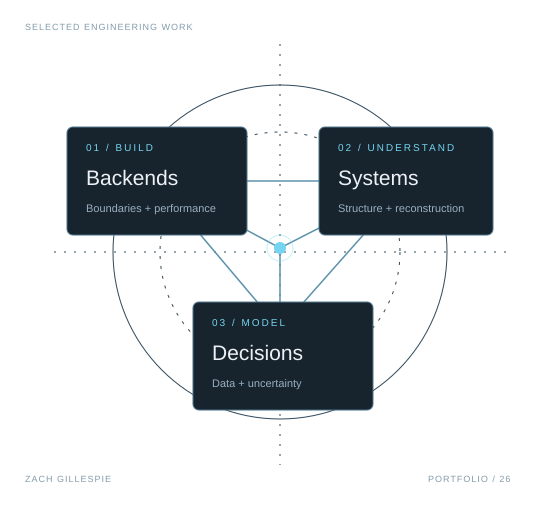
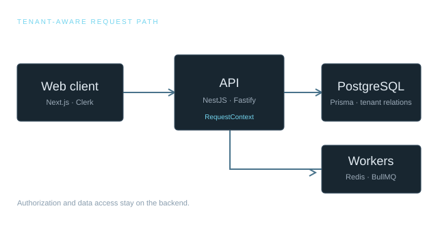
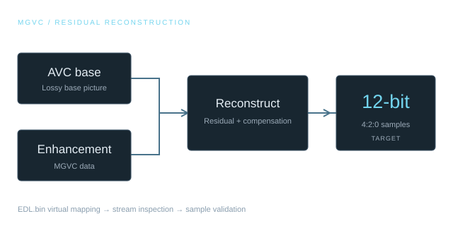
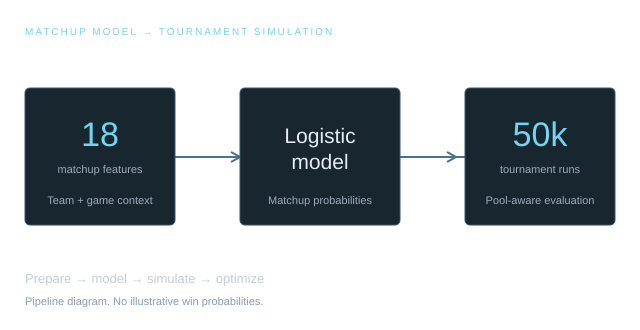
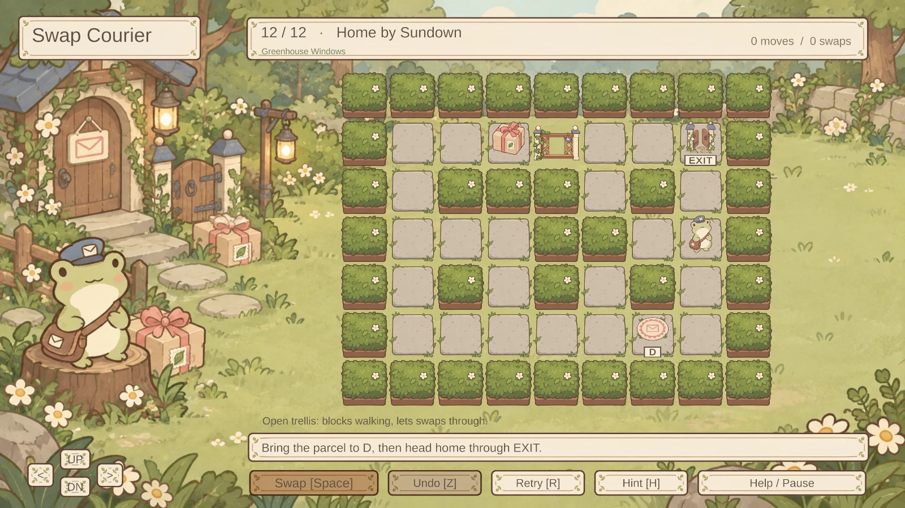

UNIVERSITY OF MICHIGAN / CS ’26
Good systems.
Clear decisions.
Measurable work.
I’m Zach Gillespie, a computer science student building backend and full-stack software, investigating unfamiliar systems, and turning data into useful decisions.
Graduating December 2026 · Seeking entry-level software engineering roles

SELECTED WORK
From data boundary
to decision boundary.
Four projects, four kinds of engineering problems. Each case study explains the system, the decisions, and the evidence behind the result.

01 / BACKEND & FULL STACK
TriageFlow ↗
A support desk built around tenant isolation, explicit permissions, and measured database performance.

02 / SYSTEMS & REVERSE ENGINEERING
Panasonic MGVC Decoder ↗
Investigating a proprietary video format through virtual stream mapping and residual reconstruction.

03 / DATA & SIMULATION
March Madness Optimizer ↗
A reproducible pipeline that turns matchup predictions into decisions tailored to a bracket pool.

04 / GAME DEVELOPMENT · EECS 494
Swap Courier & Metroid ↗
An original delivery puzzle and a classic-game recreation with a custom grappling level. Play both on Windows or Mac.
ABOUT / HOW I WORK
I like the part where
the details matter.
My interests sit where software meets constraints: keeping one tenant’s data separate from another’s, understanding why a database query is slow, or reconstructing a stream from a poorly documented format.
I’m pursuing a B.S. in Computer Science at the University of Michigan’s College of Engineering. I’m especially interested in backend and full-stack roles involving databases, performance, and data-intensive applications.
Building a technical community
As founder and Technical/Media Lead of Michigan Cantor, I organize around coding projects, peer mentorship, interview preparation, and technical development. I helped establish programming and finance events with partners including Two Sigma and PEAK6.
More on my leadership →LET’S CONNECT